Change analysis for India for PRIMAP-hist v2.8_final compared to
v2.7_final
This changelog is published under the creative commons non-commercial
share alike license. For more information see creativecommons.org.
Overview over
emissions by sector and gas
The following figures show the aggregate national total emissions
excluding LULUCF AR6GWP100 for the country reported priority scenario.
The dotted lines show the v2.7_final data.
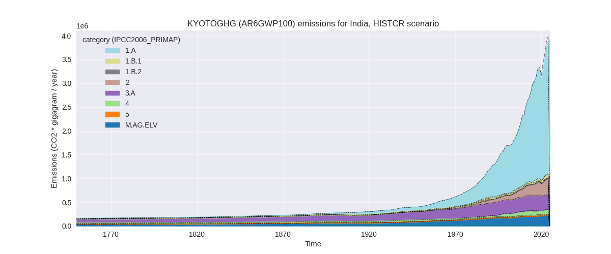
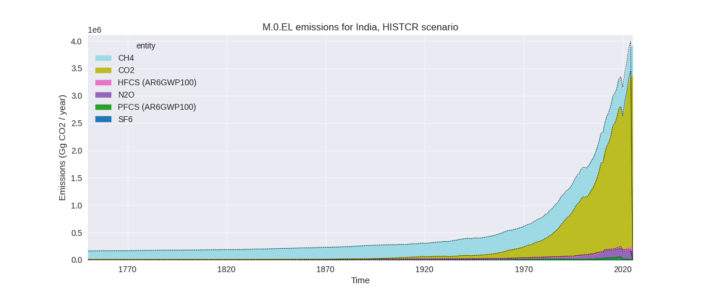
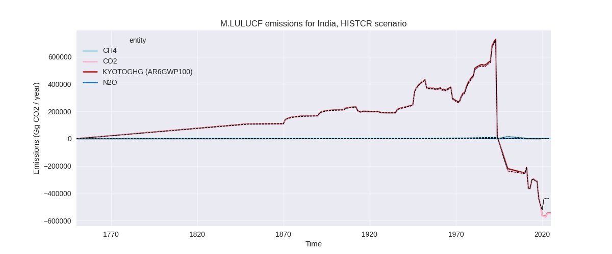
The following figures show the aggregate national total emissions
excluding LULUCF AR6GWP100 for the third party priority scenario. The
dotted lines show the v2.7_final data.
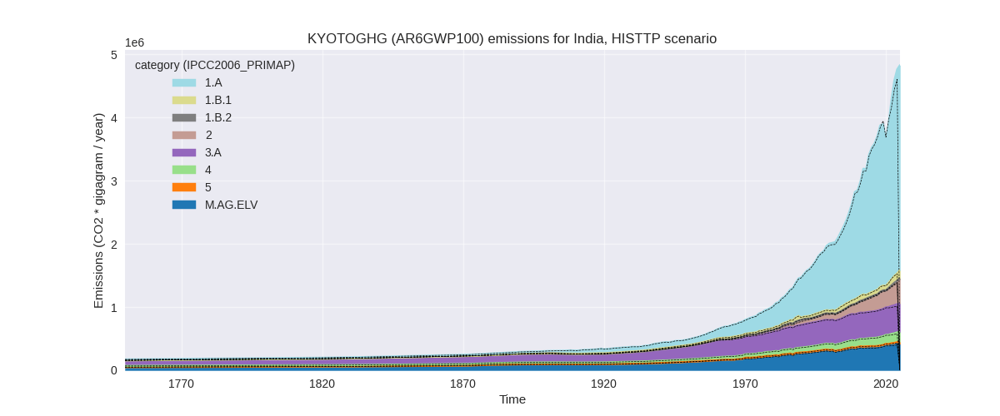
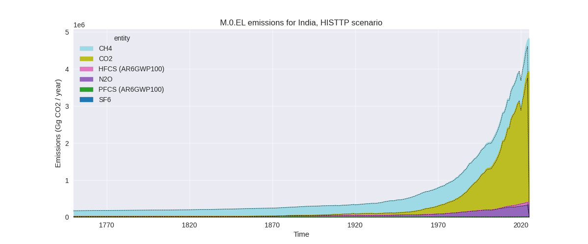
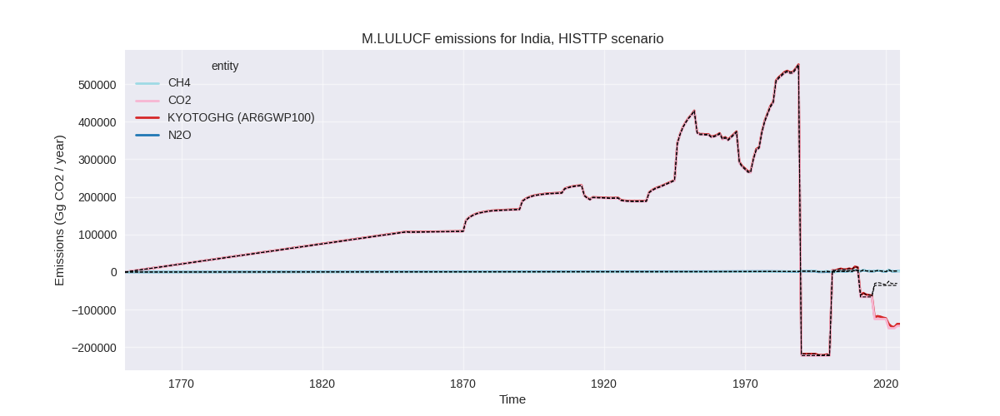
Used country reported data
The changelog with this information is available upon request for
non-commercial customers. Paying commercial customers will be provided
with the information.
Overview over changes
In the country reported priority scenario we have the following
changes for aggregate Kyoto GHG and national total emissions excluding
LULUCF (M.0.EL):
- Emissions in 2024 have changed by -3.4%% (-136292.10 Gg CO2 / year)
- Emissions in 1990-2024 have changed by -1.9%% (-43877.09 Gg CO2 / year)
In the third party priority scenario we have the following changes
for aggregate Kyoto GHG and national total emissions excluding LULUCF
(M.0.EL):
- Emissions in 2024 have changed by 3.4%% (157552.20 Gg CO2 / year)
- Emissions in 1990-2024 have changed by 1.0%% (26913.90 Gg CO2 / year)
Most
important changes per scenario and time frame
In the country reported priority scenario the
following sector-gas combinations have the highest absolute impact on
national total KyotoGHG (AR6GWP100) emissions in 2024
(up to 10 with either at least 0.2% impact on total emissions or at
least 20% change):
- 1: 1.A, CO2 with -96726.60 Gg CO2 / year (-3.4%, -2.4%)
- 2: 2, HFCS (AR6GWP100) with 34472.67 Gg CO2 / year (114.0%, 0.9%)
- 3: 2, CO2 with -32377.47 Gg CO2 / year (-10.8%, -0.8%)
- 4: 1.B.1, CO2 with -27197.96 Gg CO2 / year (-49.7%, -0.7%)
- 5: 5, N2O with -17239.88 Gg CO2 / year (-100.0%, -0.4%)
- 6: 5, CO2 with -14190.00 Gg CO2 / year (-100.0%, -0.4%)
- 7: M.AG.ELV, CH4 with 13884.36 Gg CO2 / year (14.4%, 0.3%)
- 8: 1.A, N2O with -10968.81 Gg CO2 / year (-37.1%, -0.3%)
- 9: 2, PFCS (AR6GWP100) with 10392.88 Gg CO2 / year (inf%, 0.3%)
- 10: 1.A, CH4 with -7102.05 Gg CO2 / year (-65.6%, -0.2%)
In the country reported priority scenario the
following sector-gas combinations have the highest absolute impact on
national total KyotoGHG (AR6GWP100) emissions in
1990-2024 (up to 10 with either at least 0.1% impact on
total emissions or at least 10% change):
- 1: 5, CO2 with -14190.00 Gg CO2 / year (-100.0%, -0.6%)
- 2: 1.A, CO2 with -13730.03 Gg CO2 / year (-1.0%, -0.6%)
- 3: 5, N2O with -11088.52 Gg CO2 / year (-100.0%, -0.5%)
- 4: 2, HFCS (AR6GWP100) with 3309.22 Gg CO2 / year (22.4%, 0.1%)
- 5: 2, CO2 with -2467.61 Gg CO2 / year (-2.0%, -0.1%)
- 6: 1.B.1, CO2 with -1923.77 Gg CO2 / year (-15.1%, -0.1%)
- 7: 1.A, N2O with -1393.98 Gg CO2 / year (-10.6%, -0.1%)
- 8: 5, CH4 with -1255.50 Gg CO2 / year (-100.0%, -0.1%)
In the third party priority scenario the following
sector-gas combinations have the highest absolute impact on national
total KyotoGHG (AR6GWP100) emissions in 2024 (up to 10
with either at least 0.2% impact on total emissions or at least 20%
change):
- 1: 1.A, CO2 with 153150.40 Gg CO2 / year (5.1%, 3.3%)
- 2: 1.B.1, CO2 with -27197.96 Gg CO2 / year (-49.7%, -0.6%)
- 3: 4, CH4 with 9263.42 Gg CO2 / year (7.4%, 0.2%)
- 4: 2, CH4 with -6571.45 Gg CO2 / year (-93.5%, -0.1%)
In the third party priority scenario the following
sector-gas combinations have the highest absolute impact on national
total KyotoGHG (AR6GWP100) emissions in 1990-2024 (up
to 10 with either at least 0.1% impact on total emissions or at least
10% change):
- 1: 1.A, CO2 with 25441.88 Gg CO2 / year (1.7%, 0.9%)
- 2: 4, CH4 with 3193.35 Gg CO2 / year (3.3%, 0.1%)
- 3: 1.B.1, CO2 with -1923.77 Gg CO2 / year (-15.1%, -0.1%)
- 4: 2, CH4 with -846.53 Gg CO2 / year (-38.6%, -0.0%)
- 5: 1.B.2, CO2 with -697.71 Gg CO2 / year (-17.7%, -0.0%)
Notes on data changes
The changelog with this information is available upon request for
non-commercial customers. Paying commercial customers will be provided
with the information.
Changes by sector and gas
For each scenario and time frame the changes are displayed for all
individual sectors and all individual gases. In the sector plot we use
aggregate Kyoto GHGs in AR6GWP100. In the gas plot we usenational total
emissions without LULUCF.
country reported scenario
2024
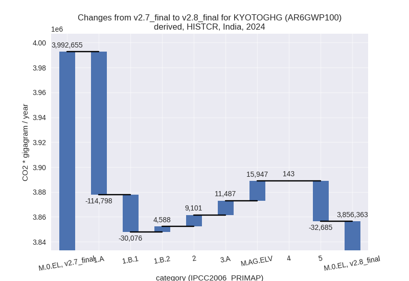
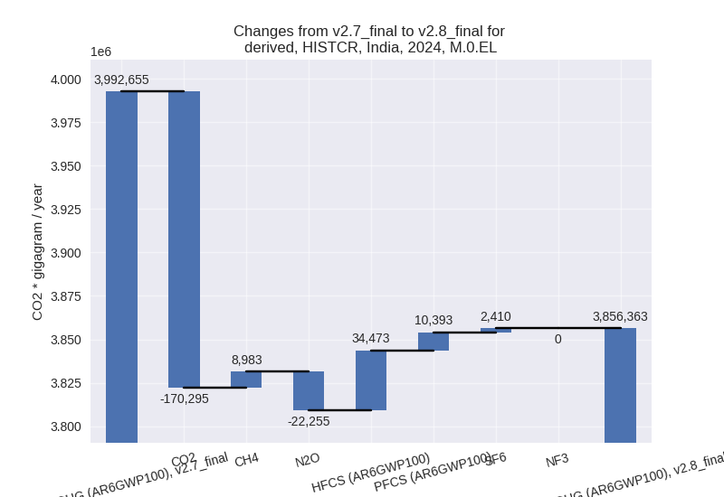
1990-2024
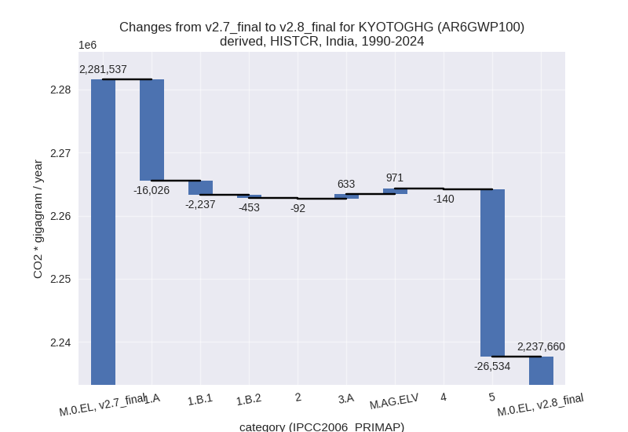
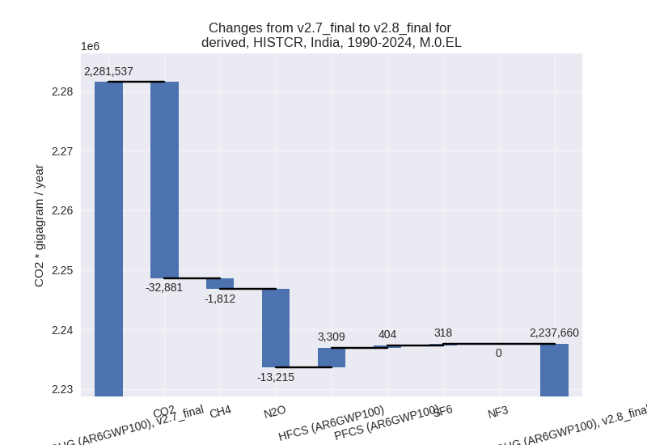
third party scenario
2024
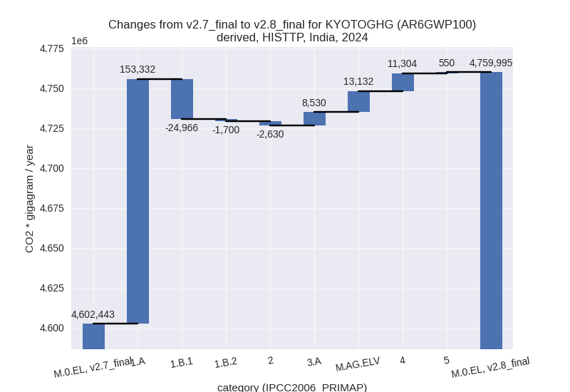
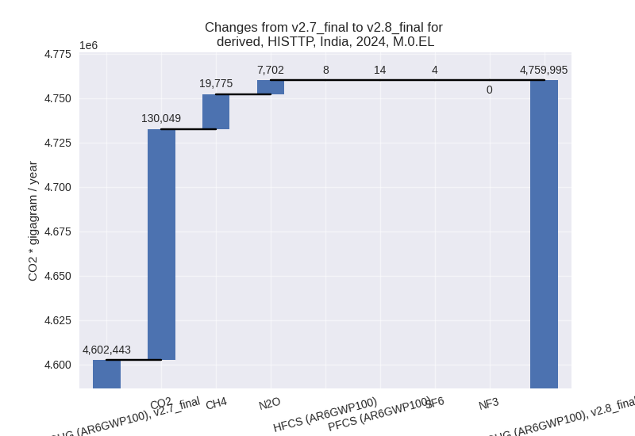
1990-2024
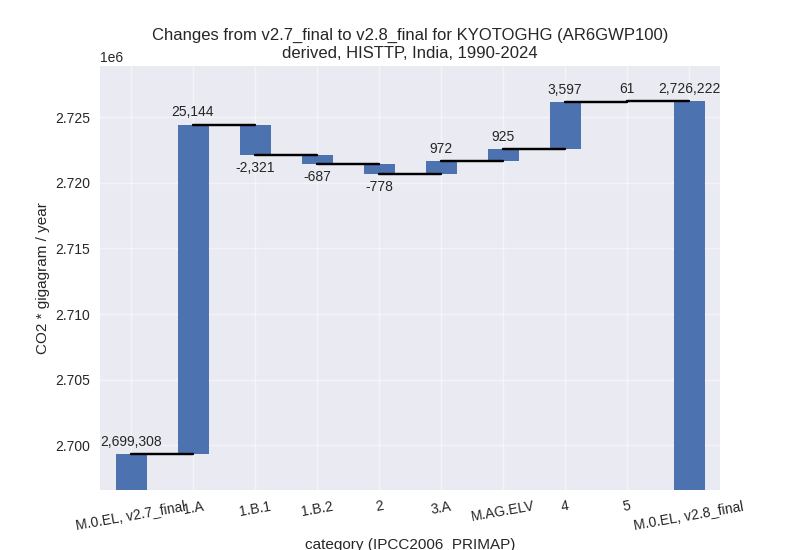
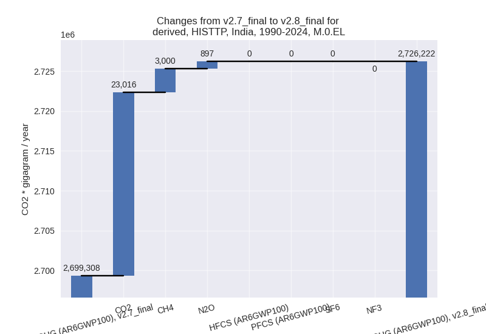
Detailed changes for the
scenarios:
country reported scenario
(HISTCR):
Most important changes
per time frame
For 2024 the following sector-gas combinations have
the highest absolute impact on national total KyotoGHG (AR6GWP100)
emissions in 2024 (up to 20 with either at least 0.2%
impact on total emissions or at least 20% change):
- 1: 1.A, CO2 with -96726.60 Gg CO2 / year (-3.4%), -2.4%)
- 2: 2, HFCS (AR6GWP100) with 34472.67 Gg CO2 / year (114.0%), 0.9%)
- 3: 2, CO2 with -32377.47 Gg CO2 / year (-10.8%), -0.8%)
- 4: 1.B.1, CO2 with -27197.96 Gg CO2 / year (-49.7%), -0.7%)
- 5: 5, N2O with -17239.88 Gg CO2 / year (-100.0%), -0.4%)
- 6: 5, CO2 with -14190.00 Gg CO2 / year (-100.0%), -0.4%)
- 7: M.AG.ELV, CH4 with 13884.36 Gg CO2 / year (14.4%), 0.3%)
- 8: 1.A, N2O with -10968.81 Gg CO2 / year (-37.1%), -0.3%)
- 9: 2, PFCS (AR6GWP100) with 10392.88 Gg CO2 / year (inf%), 0.3%)
- 10: 1.A, CH4 with -7102.05 Gg CO2 / year (-65.6%), -0.2%)
- 11: 1.B.2, CH4 with 6689.94 Gg CO2 / year (120.8%), 0.2%)
- 12: 2, CH4 with -6541.70 Gg CO2 / year (-84.8%), -0.2%)
- 13: 3.A, N2O with 5556.72 Gg CO2 / year (212.5%), 0.1%)
- 14: 2, SF6 with 2409.95 Gg CO2 / year (2194.3%), 0.1%)
- 15: 1.B.2, CO2 with -2100.86 Gg CO2 / year (-54.6%), -0.1%)
- 16: 5, CH4 with -1255.50 Gg CO2 / year (-100.0%), -0.0%)
- 17: 2, N2O with 744.88 Gg CO2 / year (31.8%), 0.0%)
For 1990-2024 the following sector-gas combinations
have the highest absolute impact on national total KyotoGHG (AR6GWP100)
emissions in 1990-2024 (up to 20 with either at least
0.1% impact on total emissions or at least 10% change):
- 1: 5, CO2 with -14190.00 Gg CO2 / year (-100.0%), -0.6%)
- 2: 1.A, CO2 with -13730.03 Gg CO2 / year (-1.0%), -0.6%)
- 3: 5, N2O with -11088.52 Gg CO2 / year (-100.0%), -0.5%)
- 4: 2, HFCS (AR6GWP100) with 3309.22 Gg CO2 / year (22.4%), 0.1%)
- 5: 2, CO2 with -2467.61 Gg CO2 / year (-2.0%), -0.1%)
- 6: 1.B.1, CO2 with -1923.77 Gg CO2 / year (-15.1%), -0.1%)
- 7: 1.A, N2O with -1393.98 Gg CO2 / year (-10.6%), -0.1%)
- 8: 5, CH4 with -1255.50 Gg CO2 / year (-100.0%), -0.1%)
- 9: 2, CH4 with -837.53 Gg CO2 / year (-33.6%), -0.0%)
- 10: 2, N2O with -817.03 Gg CO2 / year (-22.7%), -0.0%)
- 11: 1.B.2, CO2 with -697.71 Gg CO2 / year (-17.7%), -0.0%)
- 12: 2, SF6 with 317.53 Gg CO2 / year (146.8%), 0.0%)
Changes in the main sectors for aggregate KyotoGHG (AR6GWP100)
are
- 1: Total sectoral emissions in 2022 are 2514231.70
Gg CO2 / year which is 72.8% of M.0.EL emissions. 2024 Emissions have
changed by -4.7% (-140285.30 Gg CO2
/ year). 1990-2024 Emissions have changed by -1.2% (-18716.07 Gg CO2 / year). For 2024
the changes per gas
are:
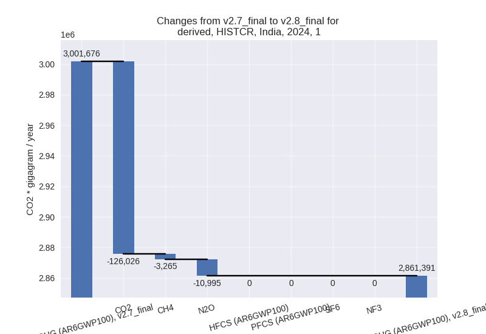
The changes come from the following subsectors:
- 1.A: Total sectoral emissions in 2022 are
2452656.40 Gg CO2 / year which is 97.6% of category 1 emissions. 2024
Emissions have changed by -4.0%
(-114797.50 Gg CO2 / year). 1990-2024 Emissions have changed by -1.1% (-16025.65 Gg CO2 / year). For 2024
the changes per gas
are:
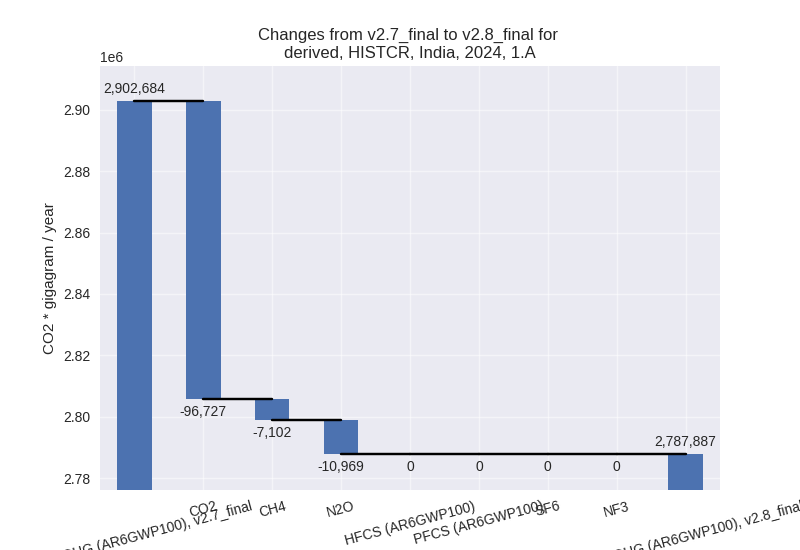
There is no subsector information available in PRIMAP-hist.
- 1.B.1: Total sectoral emissions in 2022 are
47705.99 Gg CO2 / year which is 1.9% of category 1 emissions. 2024
Emissions have changed by -33.6%
(-30075.97 Gg CO2 / year). 1990-2024 Emissions have changed by -6.7% (-2237.09 Gg CO2 / year). For 2024
the changes per gas
are:
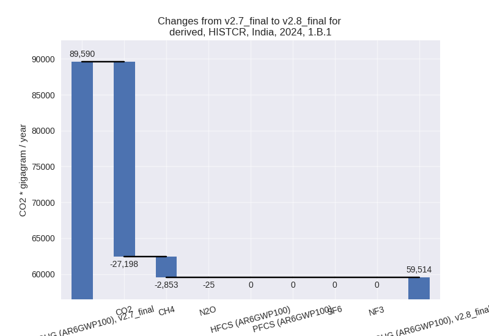
For 1990-2024 the changes per gas
are:
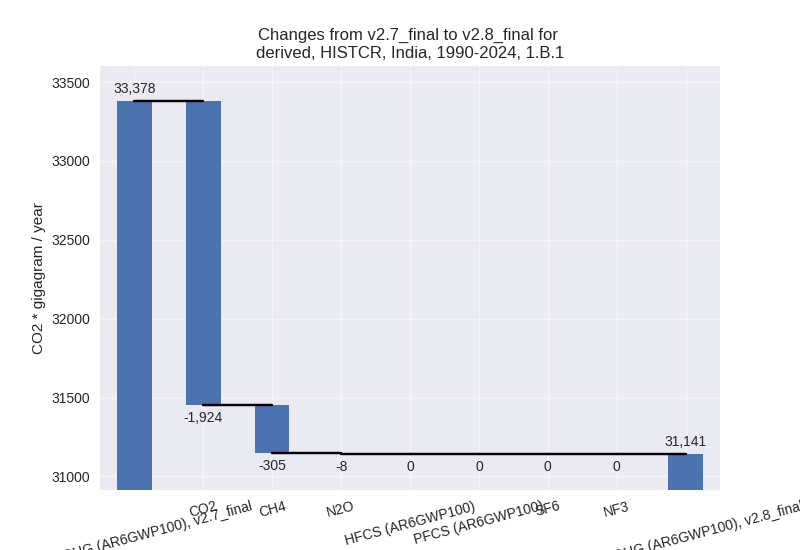
There is no subsector information available in PRIMAP-hist.
- 1.B.2: Total sectoral emissions in 2022 are
13869.26 Gg CO2 / year which is 0.6% of category 1 emissions. 2024
Emissions have changed by 48.8%
(4588.15 Gg CO2 / year). 1990-2024 Emissions have changed by -1.6% (-453.33 Gg CO2 / year). For 2024
the changes per gas
are:
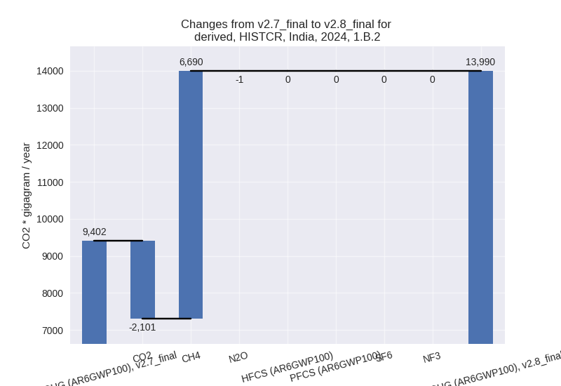
There is no subsector information available in PRIMAP-hist.
- 2: Total sectoral emissions in 2022 are 311235.80
Gg CO2 / year which is 9.0% of M.0.EL emissions. 2024 Emissions have
changed by 2.7% (9101.21 Gg CO2 /
year). 1990-2024 Emissions have changed by -0.1% (-91.69 Gg CO2 / year). For 2024 the
changes per gas
are:
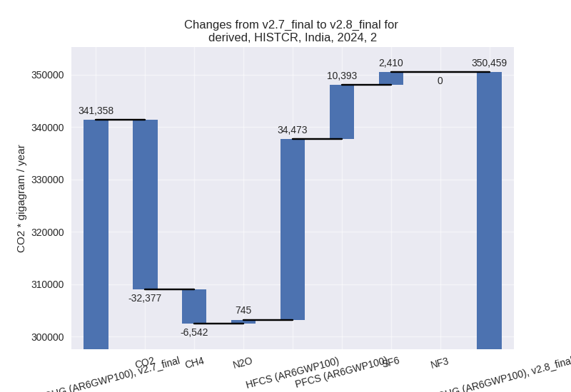
- M.AG: Total sectoral emissions in 2022 are
533708.66 Gg CO2 / year which is 15.5% of M.0.EL emissions. 2024
Emissions have changed by 5.3%
(27434.17 Gg CO2 / year). 1990-2024 Emissions have changed by 0.3% (1604.29 Gg CO2 / year). For 2024 the
changes per gas
are:
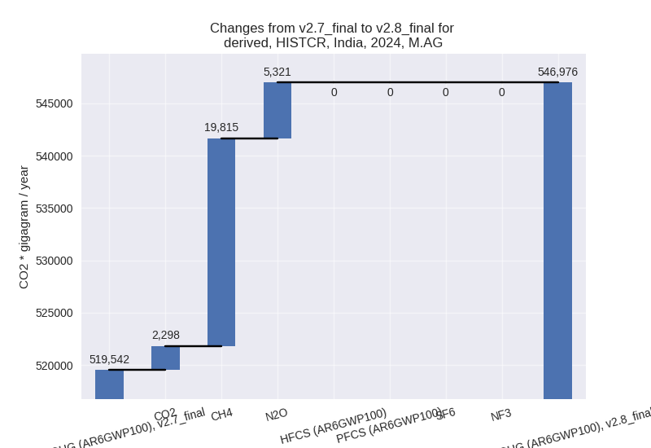
The changes come from the following subsectors:
- 3.A: Total sectoral emissions in 2022 are 312417.53
Gg CO2 / year which is 58.5% of category M.AG emissions. 2024 Emissions
have changed by 3.8% (11487.47 Gg
CO2 / year). 1990-2024 Emissions have changed by 0.2% (633.35 Gg CO2 / year). For 2024 the
changes per gas
are:
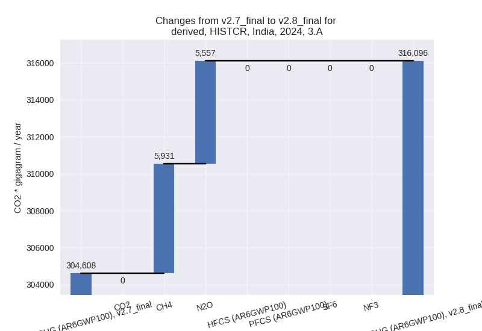
There is no subsector information available in PRIMAP-hist.
- M.AG.ELV: Total sectoral emissions in 2022 are
221291.12 Gg CO2 / year which is 41.5% of category M.AG emissions. 2024
Emissions have changed by 7.4%
(15946.70 Gg CO2 / year). 1990-2024 Emissions have changed by 0.5% (970.94 Gg CO2 / year). For 2024 the
changes per gas
are:
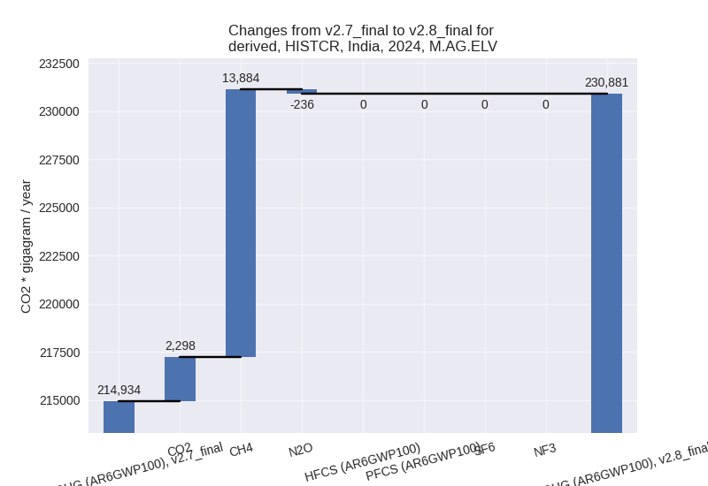
There is no subsector information available in PRIMAP-hist.
- 4: Total sectoral emissions in 2022 are 93537.29 Gg
CO2 / year which is 2.7% of M.0.EL emissions. 2024 Emissions have
changed by 0.1% (143.24 Gg CO2 /
year). 1990-2024 Emissions have changed by -0.2% (-139.60 Gg CO2 / year).
- 5: Total sectoral emissions in 2022 are 0.00 Gg CO2
/ year which is 0.0% of M.0.EL emissions. 2024 Emissions have changed by
-100.0% (-32685.38 Gg CO2 / year).
1990-2024 Emissions have changed by -100.0% (-26534.02 Gg CO2 / year). For
2024 the changes per gas
are:
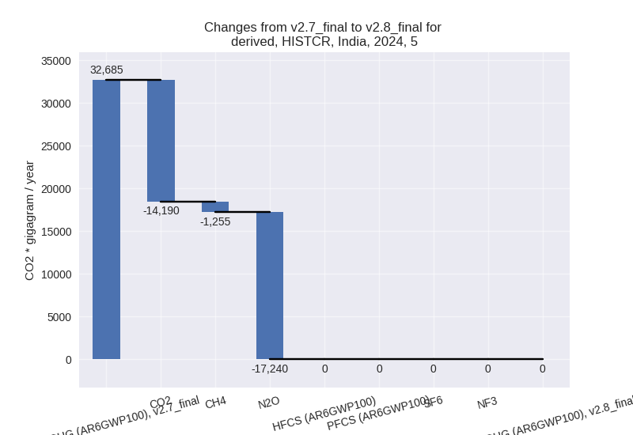
For 1990-2024 the changes per gas
are:
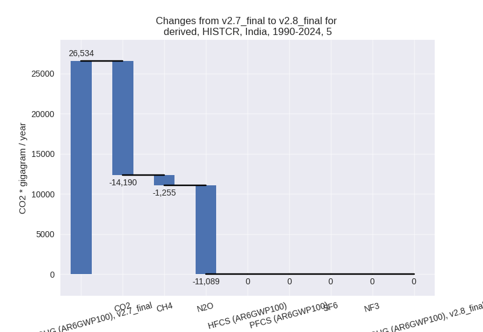
third party scenario (HISTTP):
Most important changes
per time frame
For 2024 the following sector-gas combinations have
the highest absolute impact on national total KyotoGHG (AR6GWP100)
emissions in 2024 (up to 20 with either at least 0.2%
impact on total emissions or at least 20% change):
- 1: 1.A, CO2 with 153150.40 Gg CO2 / year (5.1%), 3.3%)
- 2: 1.B.1, CO2 with -27197.96 Gg CO2 / year (-49.7%), -0.6%)
- 3: 4, CH4 with 9263.42 Gg CO2 / year (7.4%), 0.2%)
- 4: 2, CH4 with -6571.45 Gg CO2 / year (-93.5%), -0.1%)
- 5: 1.B.2, CO2 with -2100.86 Gg CO2 / year (-54.6%), -0.0%)
- 6: 1.B.1, N2O with -25.07 Gg CO2 / year (-29.9%), -0.0%)
For 1990-2024 the following sector-gas combinations
have the highest absolute impact on national total KyotoGHG (AR6GWP100)
emissions in 1990-2024 (up to 20 with either at least
0.1% impact on total emissions or at least 10% change):
- 1: 1.A, CO2 with 25441.88 Gg CO2 / year (1.7%), 0.9%)
- 2: 4, CH4 with 3193.35 Gg CO2 / year (3.3%), 0.1%)
- 3: 1.B.1, CO2 with -1923.77 Gg CO2 / year (-15.1%), -0.1%)
- 4: 2, CH4 with -846.53 Gg CO2 / year (-38.6%), -0.0%)
- 5: 1.B.2, CO2 with -697.71 Gg CO2 / year (-17.7%), -0.0%)
Changes in the main sectors for aggregate KyotoGHG (AR6GWP100)
are
- 1: Total sectoral emissions in 2022 are 2952470.30
Gg CO2 / year which is 68.9% of M.0.EL emissions. 2024 Emissions have
changed by 3.9% (126666.30 Gg CO2 /
year). 1990-2024 Emissions have changed by 1.3% (22136.34 Gg CO2 / year). For 2024
the changes per gas
are:
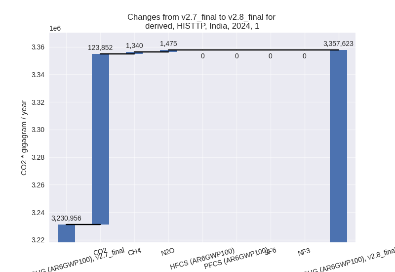
The changes come from the following subsectors:
- 1.A: Total sectoral emissions in 2022 are
2845968.20 Gg CO2 / year which is 96.4% of category 1 emissions. 2024
Emissions have changed by 5.0%
(153331.90 Gg CO2 / year). 1990-2024 Emissions have changed by 1.6% (25143.99 Gg CO2 / year). For 2024
the changes per gas
are:
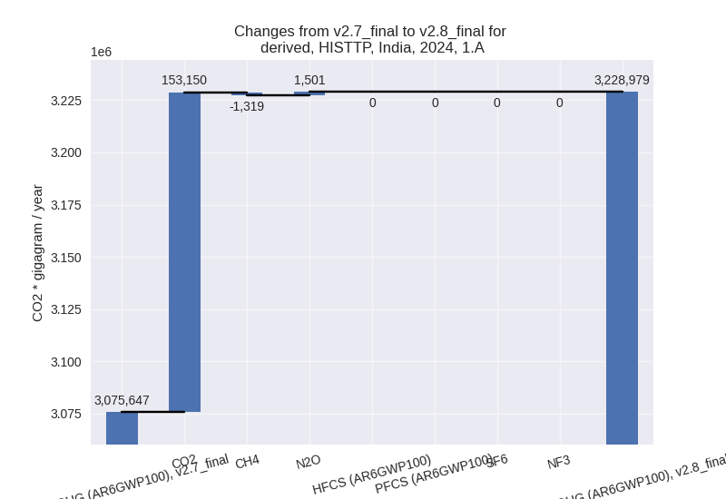
There is no subsector information available in PRIMAP-hist.
- 1.B.1: Total sectoral emissions in 2022 are
92469.73 Gg CO2 / year which is 3.1% of category 1 emissions. 2024
Emissions have changed by -17.9%
(-24966.07 Gg CO2 / year). 1990-2024 Emissions have changed by -3.5% (-2320.76 Gg CO2 / year). For 2024
the changes per gas
are:
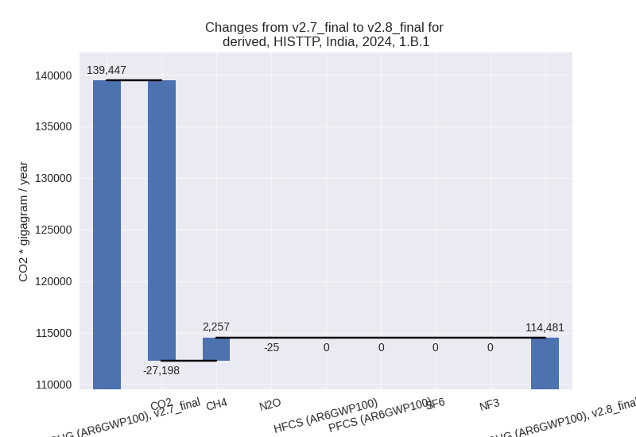
For 1990-2024 the changes per gas
are:
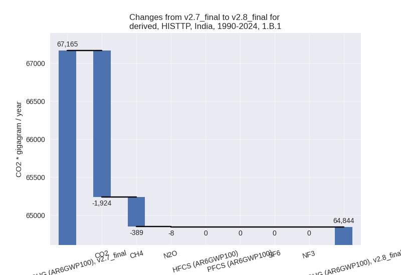
There is no subsector information available in PRIMAP-hist.
- 1.B.2: Total sectoral emissions in 2022 are
14032.33 Gg CO2 / year which is 0.5% of category 1 emissions. 2024
Emissions have changed by -10.7%
(-1699.56 Gg CO2 / year). 1990-2024 Emissions have changed by -4.4% (-686.90 Gg CO2 / year). For 2024
the changes per gas
are:
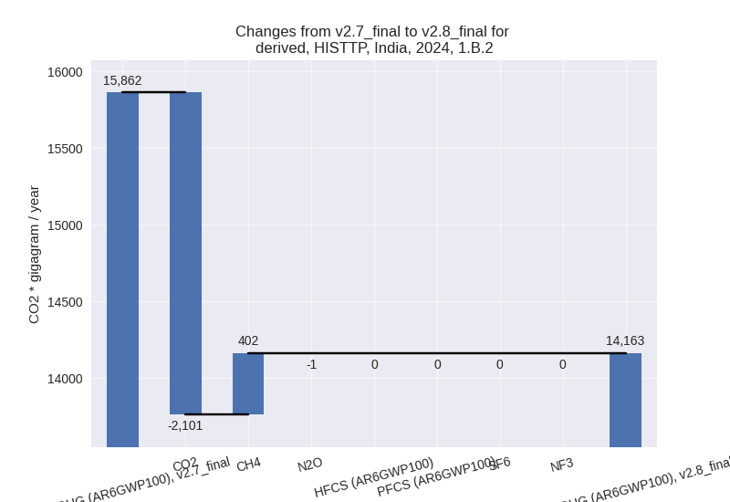
For 1990-2024 the changes per gas
are:
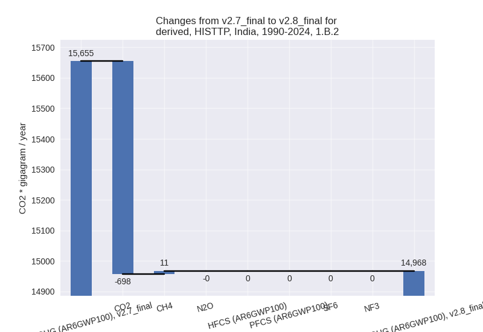
There is no subsector information available in PRIMAP-hist.
- 2: Total sectoral emissions in 2022 are 314395.73
Gg CO2 / year which is 7.3% of M.0.EL emissions. 2024 Emissions have
changed by -0.7% (-2629.52 Gg CO2 /
year). 1990-2024 Emissions have changed by -0.5% (-777.75 Gg CO2 / year).
- M.AG: Total sectoral emissions in 2022 are
836997.71 Gg CO2 / year which is 19.5% of M.0.EL emissions. 2024
Emissions have changed by 2.6%
(21661.36 Gg CO2 / year). 1990-2024 Emissions have changed by 0.3% (1897.39 Gg CO2 / year). For 2024 the
changes per gas
are:
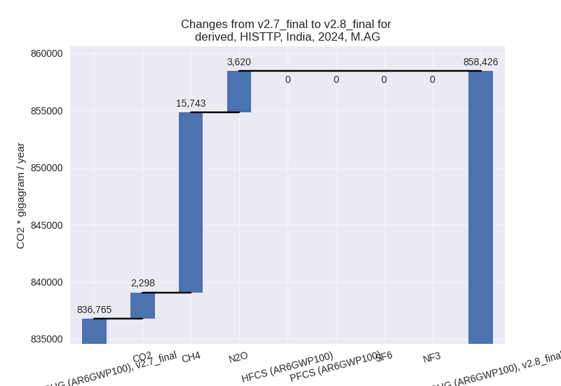
The changes come from the following subsectors:
- 3.A: Total sectoral emissions in 2022 are 440997.67
Gg CO2 / year which is 52.7% of category M.AG emissions. 2024 Emissions
have changed by 1.9% (8529.61 Gg CO2
/ year). 1990-2024 Emissions have changed by 0.2% (972.15 Gg CO2 / year).
- M.AG.ELV: Total sectoral emissions in 2022 are
396000.03 Gg CO2 / year which is 47.3% of category M.AG emissions. 2024
Emissions have changed by 3.3%
(13131.74 Gg CO2 / year). 1990-2024 Emissions have changed by 0.3% (925.24 Gg CO2 / year). For 2024 the
changes per gas
are:
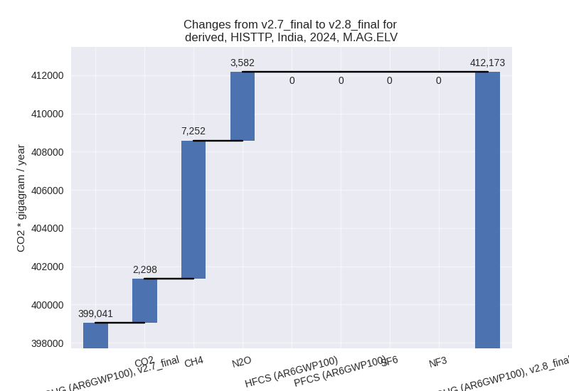
There is no subsector information available in PRIMAP-hist.
- 4: Total sectoral emissions in 2022 are 147986.96
Gg CO2 / year which is 3.5% of M.0.EL emissions. 2024 Emissions have
changed by 7.9% (11303.84 Gg CO2 /
year). 1990-2024 Emissions have changed by 3.3% (3597.20 Gg CO2 / year). For 2024 the
changes per gas
are:
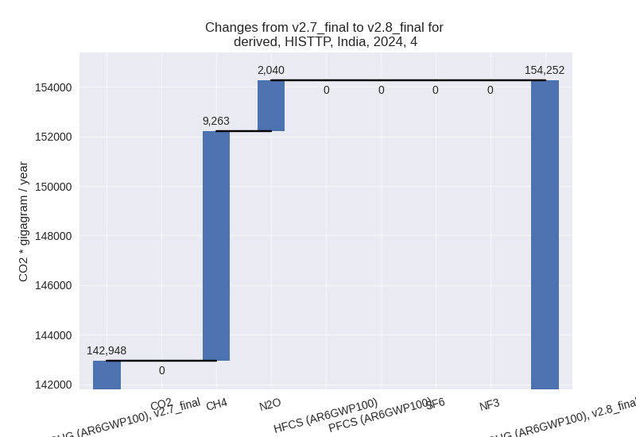
For 1990-2024 the changes per gas
are:
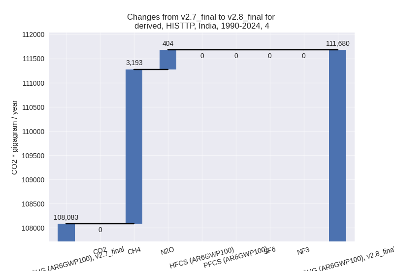
- 5: Total sectoral emissions in 2022 are 32034.06 Gg
CO2 / year which is 0.7% of M.0.EL emissions. 2024 Emissions have
changed by 1.7% (550.25 Gg CO2 /
year). 1990-2024 Emissions have changed by 0.2% (60.73 Gg CO2 / year).